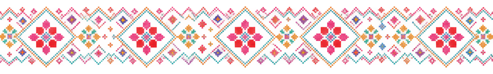

с тем же классом.
============================================================
-->
с тем же классом.
============================================================
-->
Танцевальная студия
American Tribal Style в Москве
Живи танцуя!
FCBD®Style — ATS — это богатый танцевальный коллаж, сплетённый из стилей восточных народов Испании, Индии, Северной Африки, Среднего Востока и Центральной Азии. Без ограничений по возрасту, опыту и мировоззрению.
10+
лет на сцене и в студии
5
танцевальных традиций в основе стиля
0
ограничений по возрасту и подготовке

Что такое ATS
Импровизационный групповой танец, в основе которого — доверие внутри круга и общий язык движений.
FCBD®Style — ATS — это импровизация, которая предлагает выбор движения, смену лидера, право быть лидером и безоговорочное следование за лидером.
Изменение настроения, погодных условий и других обстоятельств не должно быть препятствием для выхода на сцену — в этом суть трайбл-импровизации.
-
Общий словарь движений. Каждая участница знает единый набор шагов и жестов-подсказок.
-
Смена лидера. Роль ведущей переходит от одной танцовщицы к другой прямо во время танца.
-
Импровизация в кругу. Нет фиксированной хореографии — есть чуткость к партнёршам рядом.
Инфо
Преподаватель, цены и расписание
Оксана Толкунова
Танцевальный хореограф, основательница студии
Ведёт занятия по FCBD®Style — ATS, выступает и ставит номера на стыке трайбл-фьюжн направлений. Работает с группами любого уровня — от новичков до перформанс-состава.
Цены
| Формат | Цена |
|---|---|
| Разовое занятие | 1 000 ₽ |
| Абонемент на 4 занятия | 3 600 ₽ |
| Абонемент на 8 занятий | 6 800 ₽ |
| Пробное занятие | 500 ₽ |
Расписание
| День | Время | Группа |
|---|---|---|
| Вторник | 19:00–20:30 | Начинающие |
| Четверг | 19:00–20:30 | Продолжающие |
| Суббота | 12:00–14:00 | Перформанс-состав |
Готовы попробовать?
Напишите нам, и мы подберём удобную группу и время для первого занятия.
Галерея
Фото и видео со студии
Кадры с занятий, репетиций и выступлений. Замените заглушки на реальные фотографии, когда они будут готовы.